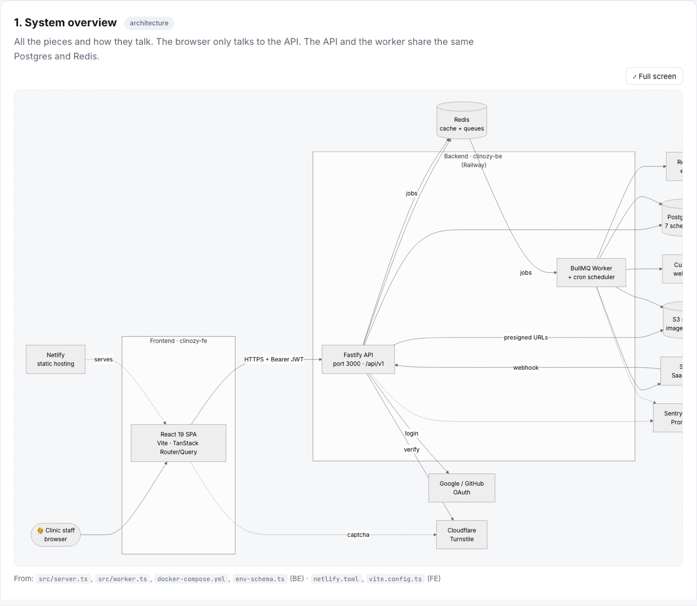
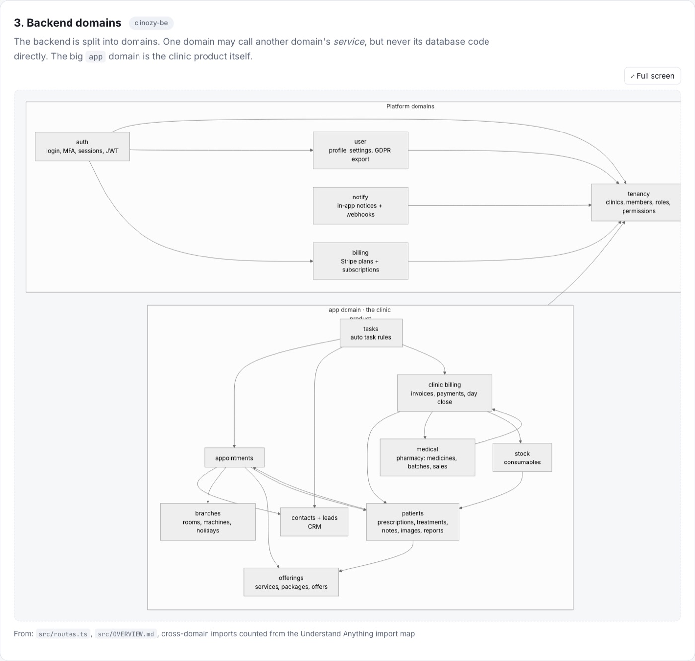
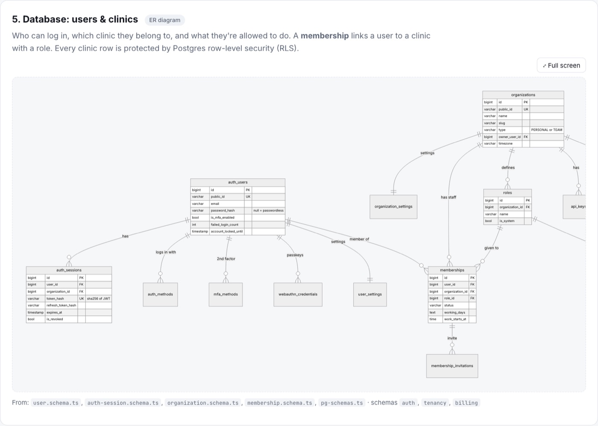
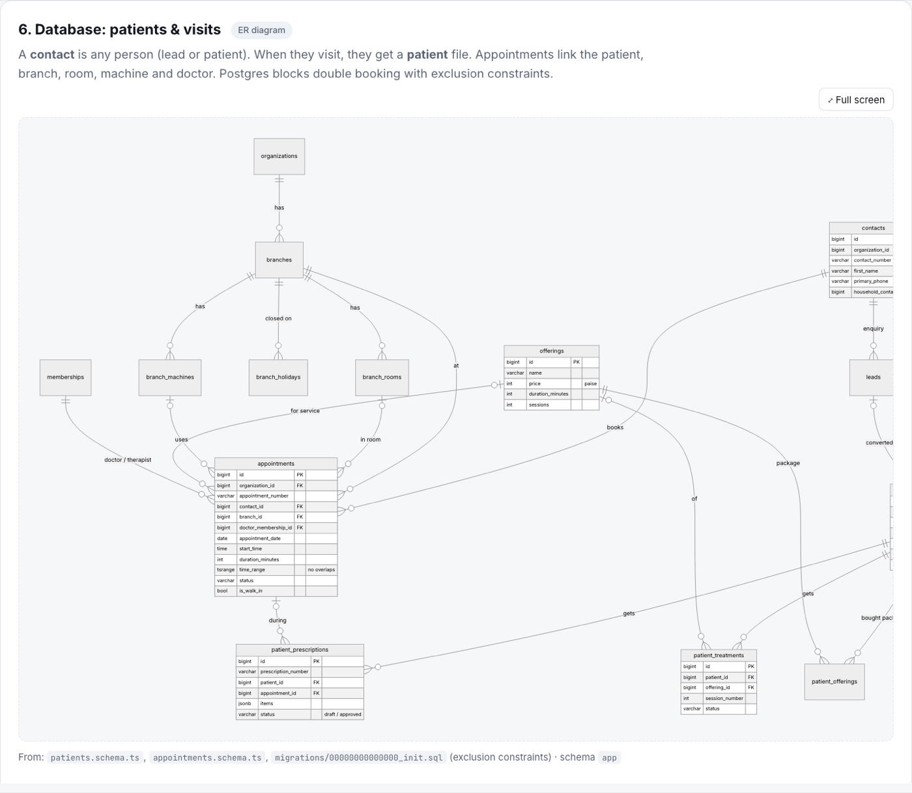
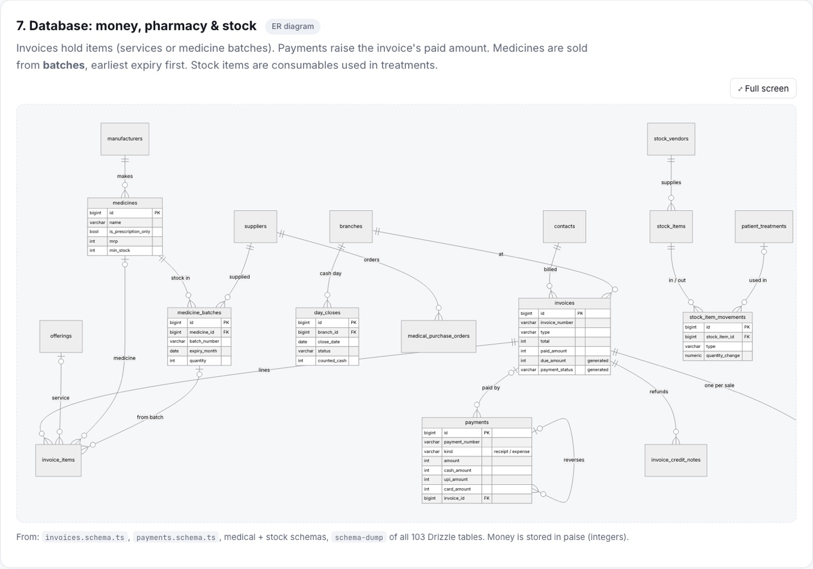
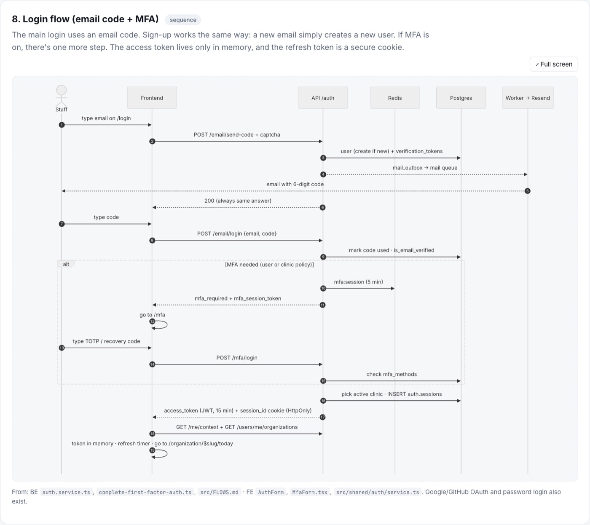
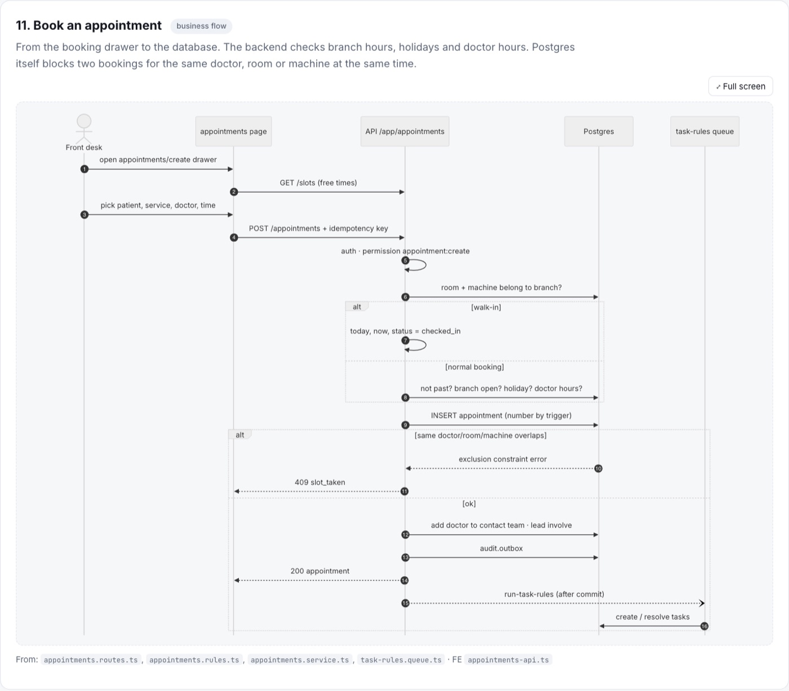
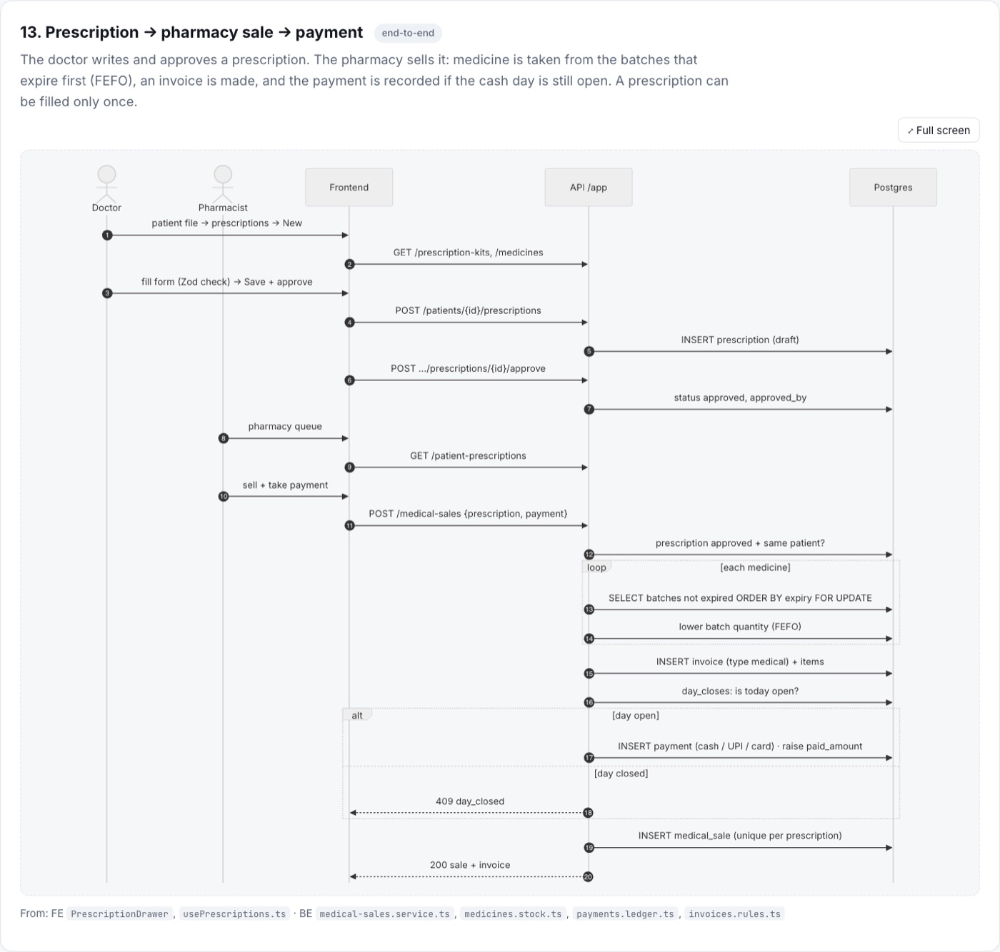
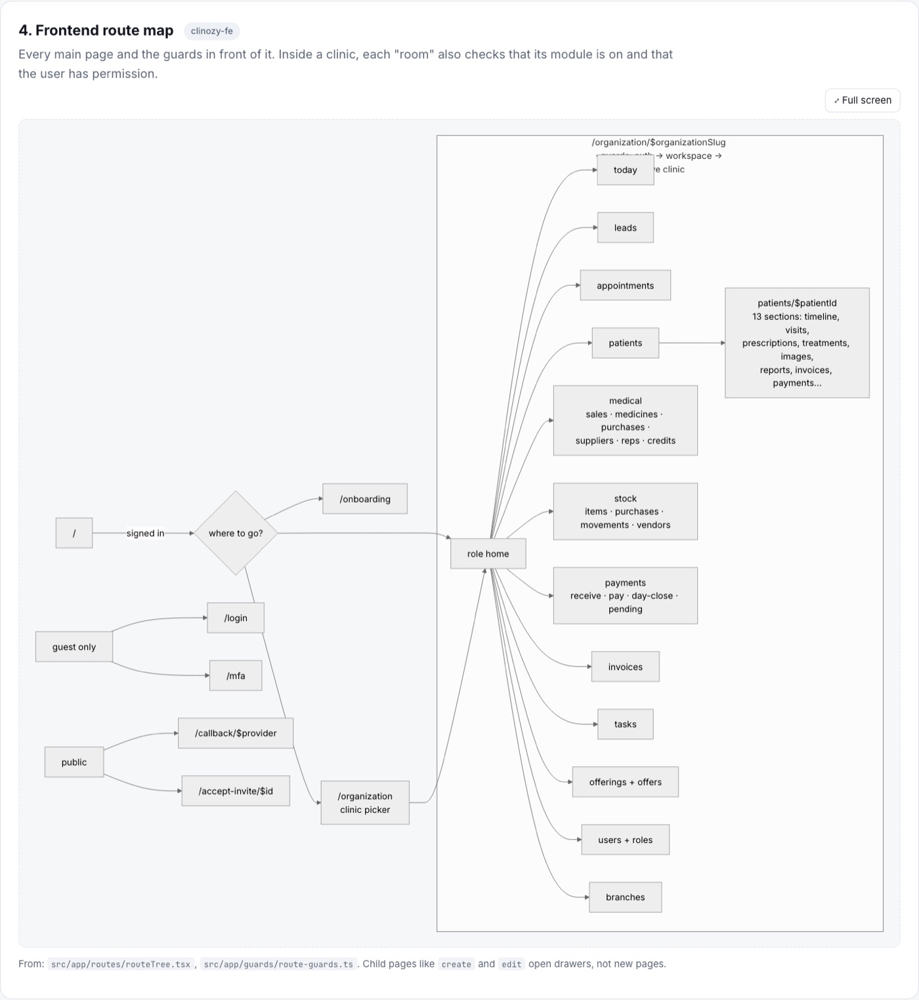
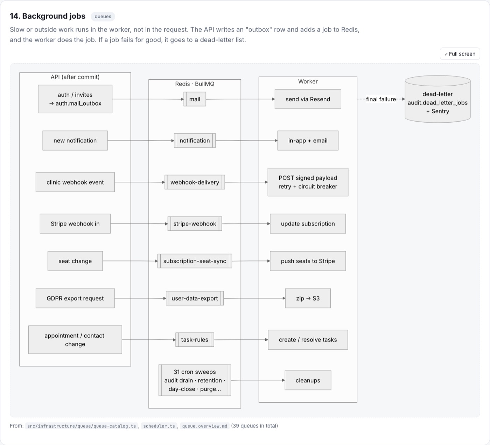

Use the menu inside the frame to jump between diagrams. Each one has its own Full screen button.
What I tried
Understand Anything is a Claude Code plugin that maps a codebase into a knowledge graph. I pointed it at Clinozy, our clinic management app: a React frontend and a Fastify + Postgres backend, about 9,000 files in total.
- The plugin's own scan scripts mapped every file and 17,353 import links for free, with no AI and no tokens, and found the hub files everything depends on.
- That map pointed to the key code: database schemas, login, routes, middlewares and queues. Only those files were then read in detail.
- Every diagram was drawn from those real facts, with the source files listed under it.
The result is 14 Mermaid diagrams:
- Big picture: system overview, frontend layers, backend domains, route map.
- Database: three ER diagrams (users and clinics, patients and visits, money, pharmacy and stock).
- Security: login with email code and MFA, token refresh, the life of one API request.
- Business flows: booking an appointment, appointment states, prescription to pharmacy sale to payment, background jobs.
Diagrams









